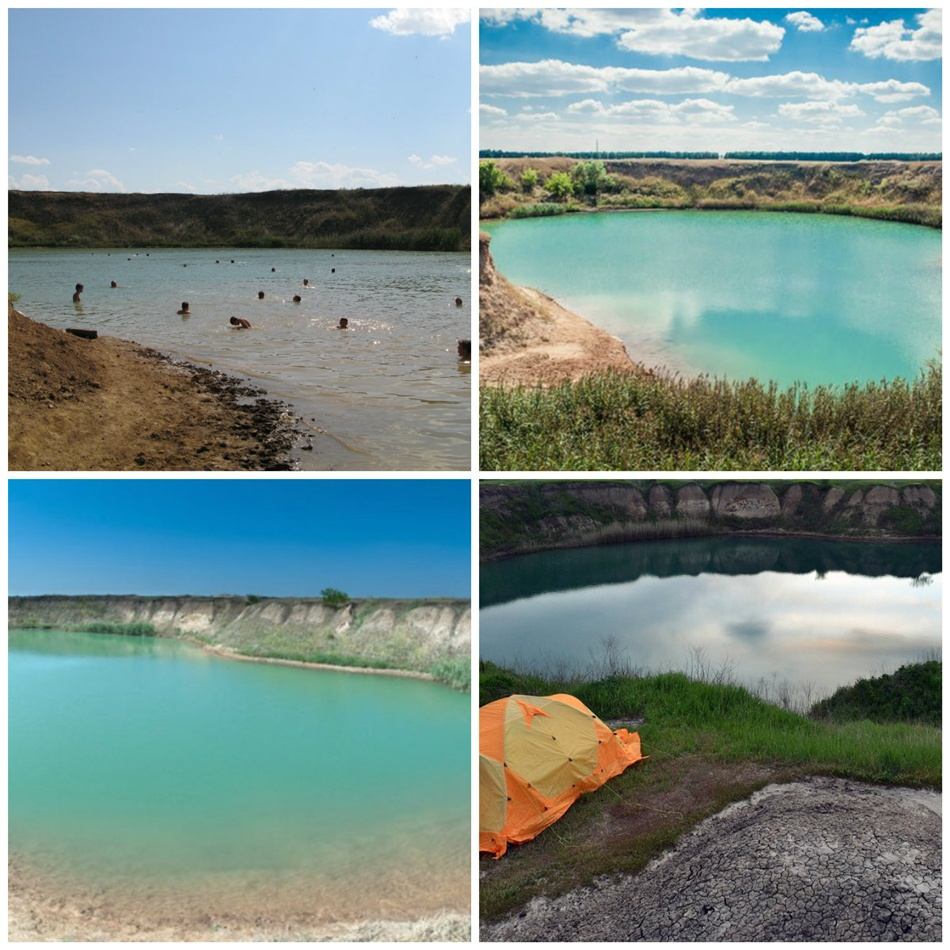
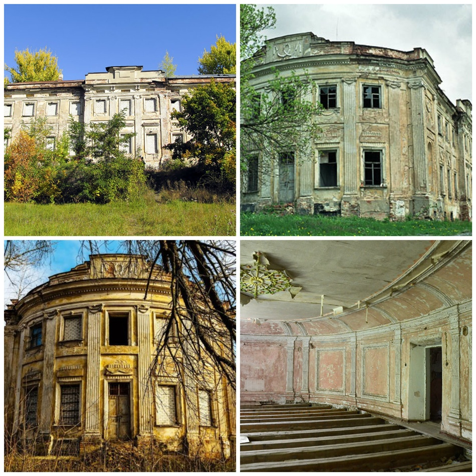

Парк и усадьба в Шаровке, Краснокутский дендропарк, "Поющие террасы" - эти живописные места уже стали
настоящей визитной карточкой Харьковской области. Но, как выяснилось, Слобожанщина богата и другими
интересными уголками, о которых знают далеко не все, даже коренные харьковчане.
Соленое озеро

В селе Антоновка Кегичевского района есть уникальное солёное озеро техногенного происхождения.
Образовалось оно в 1962 году. Тогда при бурении газовой скважины произошла авария – наружу вырвался огромный
газовый фонтан, а потом и вовсе произошло небольшое землетрясение, от которого образовался 60-метровый
кратер. Залежи газа находились ниже "соляной прослойки", поэтому после взрыва грунтовые воды вынесли соль на
поверхность, и образовалось соленое озеро.
За прошедшие годы оно постепенно опресняется, но всё ещё достаточно солёное, чтобы поддерживать человека на
поверхности, почти как на Мёртвом море. Местные жители говорят, что соленая вода из озера хорошо заживляет
раны. Есть также легенда о гигантской глубине этого озера: кто-то говорит о 75 метрах, о 200 метрах, а
кто-то и о 2 километрах!
Как добраться:
- Автобусом: с автовокзала на пр. Гагарина в 9-05,12-05,14-38,16-48 идёт
автобус Харьков-Кегичёвка. По
просьбе водитель остановит на повороте около села Антоновка. Там - метров 500-700 пешком, и вы у
озера.
- Автомобилем: ехать на Кегичевку через Староверовку до села Чапаево. За ним,
примерно через 5 км, дорога делает поворот на 90 градусов: вправо — на Кегичевку и еще правее — на Антоновку.
Координаты GPS: 49.321695, 35.813552.
В 50 км от Харькова в Змиевском направлении в долине рек Северский Донец и Гомольша находится заповедный
парк Гомольшанские леса. Он уникален прежде всего своей флорой и фауной. В дубовых рощах можно запросто
повстречать оленя, диких кабанов, косуль, зайцев, лис… А на озерах растут водные лилии.
Но известны Гомольшанские леса не только природой. Тут есть и археологические памятники: древние городища
(Сухогомольшанское или Великогомольшанское), скифские курганы-могильники, руины казацкого
Свято-Николаевского монастыря – напоминание о временах запорожского казачества.
Именно тут когда-то проходил древний Муравский шлях, по которому в 16-18 веках передвигались торговцы,
кочевники, послы, и совершали набеги на Русь крымские татары. Кстати, что очень удобно для бывалых
туристов
– тут разрешается ставить палатки.
Как добраться:
- Автобусом: с Конного рынка автобусом "Харьков—Змиев" № 316т до конечной,
оттуда автобусом на Комсомольское, поворот на с. Задонецкое (5 минут от Змиева).
- Автомобилем: по трассе на Змиев. После Змиева – мимо заправки и полигона
ТБО до села Задонецкое.
Координаты GPS: 49.571177, 36.294597
Усадьба Шидловских

Гораздо менее "раскрученная" усадьба, чем знаменитая Шаровка, но не менее живописная. Здание построено в
конце 1770-х годов как усадьба семьи аристократов Шидловских и передавалось из поколение в поколение, пока не
попало в руки статскому советнику Григорию Шидловскому. Он решил перестроить усадьбу в стиле французского короля
Людовика XVI. Именно в таком виде она и дошла до нашего времени.
Интересная особенность усадьбы, больше похожей на дворец – практическое отсутствие острых углов – их не было
ни в гостиной, ни в огромном бальном зале.
В конце XIX века указом российского императора Александра III дворец в Старом Мерчике был объявлен
государственным заповедником. Но это не уберегло его от разрухи. В советское время в имении располагался
ветеринарный техникум, а с 1997 года особняк пустует и постепенно разрушается.
В апреле 2018 года на усадьбу Шидловских обрушилось новое несчастье — там случился крупный
пожар. Огонь тушили больше суток.
Как добраться:
- Автобусом: маршрут №650т Харьков — Старый Мерчик. Отправление от станции метро "Холодная гора".
-
Автомобилем: по трассе Харьков-Валки до пгт Старый Мерчик. В самом поселке повернуть налево за рекой Сухой
Мерчик.
Координаты GPS: 49.981397, 35.758100